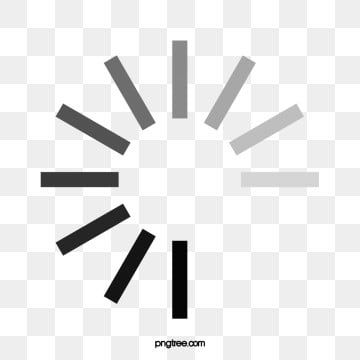
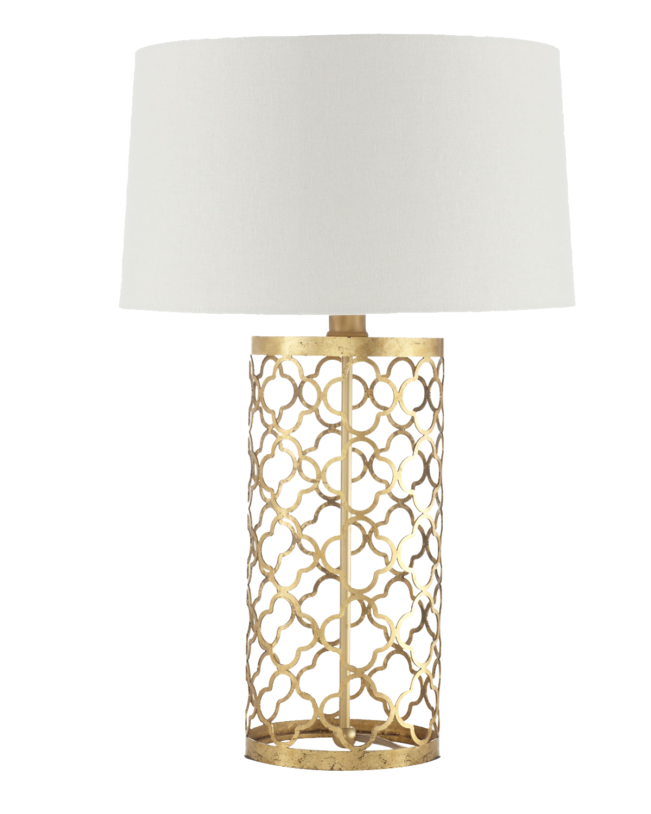
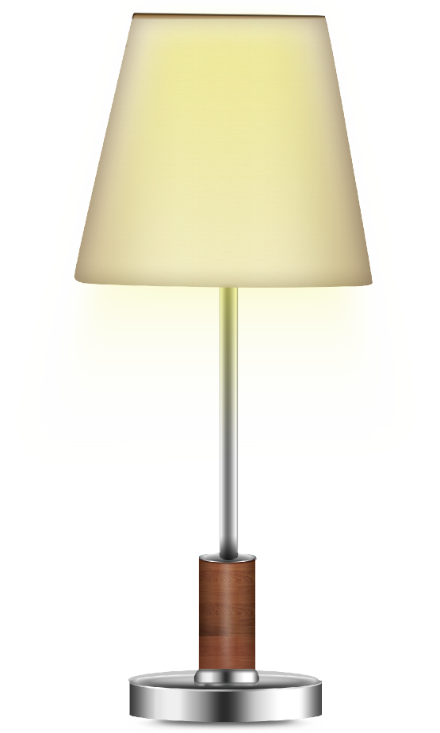

<!-- <button (click)="toggleLamp()">
  <ng-container *ngIf="lampStatus?.status === 'init'">
          
  </ng-container>
        <ng-container *ngIf="lampStatus?.status === 'on'">
          
        </ng-container>
        <ng-container *ngIf="lampStatus?.status === 'off'">
          
        </ng-container>
    </button>
     -->
<button (click)="toggleLamp()">
<ng-container *ngIf="{lampStatus: lampStatus$ | async } as vm">
  <ng-container [ngSwitch]="vm.lampStatus?.status">
    
    
    
  </ng-container>
  <h2>{{vm.lampStatus?.status}}</h2>
</ng-container>
</button>